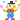

Projects!

 Collaborative Works
Collaborative Works
Paul Thomas Annotated: In the Margins
Queer Coloring Zine, Vol. 1

Written by Me
Running, Pursuing, Dancing, Moving: An Examination of Movement As It Relates to Dual-Natured Desire in the Poetry of Sappho et Alcaeus
Which Witch Is Strix: The Dual Nature of the Witches in Apuleius’ The Golden Ass
Echoes of Love: The Parodistic Nature of Ovid’s Metamorphoses
The Serpent and the Wren
These Dog-Days: Bosola’s Perception of Prodigies in The Duchess of Malfi
How the World Turned Upside-Down : An Examination of Egyptian Cartography Before and After the Battle of Actium